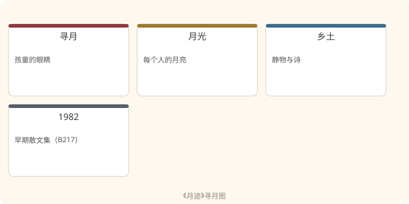

月迹
一、基本信息
| 作者 | 贾平凹 |
|---|---|
| 成书/出版 | 1982年（英文维基 B217 口径：Yueji 月迹 (The trace of the moon, 1982)） Jia Pingwa — Wikipedia (EN)（百科全书） |
| 国别/地区 | 中国 |
| 时代 | 现当代 · 当代 |
| 体裁 | 散文集 |
| 语言 | 汉语（白话） |

《月迹》寻月图（主题·结构图）
二、创作背景
英文维基（B217）：'Essay collections: Yueji 月迹 (The trace of the moon, 1982)'——贾平凹早期散文集。
篇目（通说待核）：《月迹》《一棵小桃树》等。
三、内容脉络
月亮的踪迹：孩童视角下的寻月（同名篇通说待核）。
乡土的静物画（通说待核）。
四、主要人物表
| 人物 | 身份 | 说明 |
|---|---|---|
| 孩童们 | 寻月者 | 《月迹》篇（通说待核） |
五、主题与艺术特点
- 童心与月光（同名篇通说）。
- 乡土的诗意散文（通说）。
- 早于商州三录的抒情（B217 语境）。
六、影响与评论
- 英文维基：贾平凹散文代表作（B217）。
Jia Pingwa — Wikipedia (EN)（百科全书） - 中国作家网：2004年获第三届鲁迅文学奖散文奖为《贾平凹长篇散文选》（B217 奖项列表）。
Jia Pingwa — Wikipedia (EN)（百科全书）
七、阅读建议
难点
- 散文的诗意结构。
- 八十年代初的语境。
- 《月迹》（人民文学出版社/陕西人民出版社版本，通说待核）。
先《月迹》后《商州三录》。
八、待核实
- 1982年出版（百花文艺出版社说）核对。
- 《月迹》《一棵小桃树》篇核对。
- 鲁迅文学奖散文奖（2004）核对。
本页主要来源
贾平凹的其他收录作品：秦腔